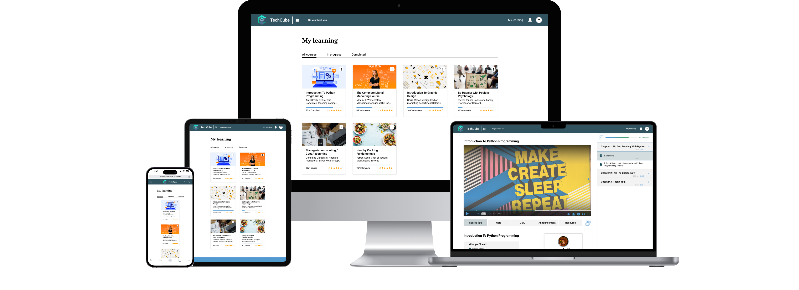
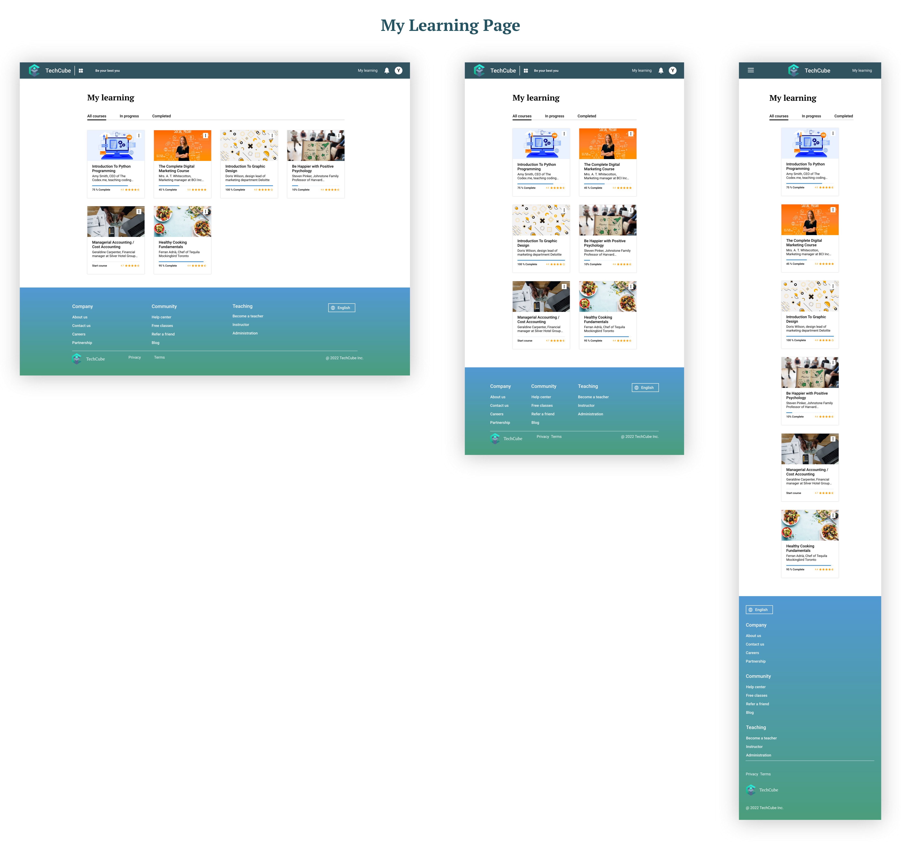
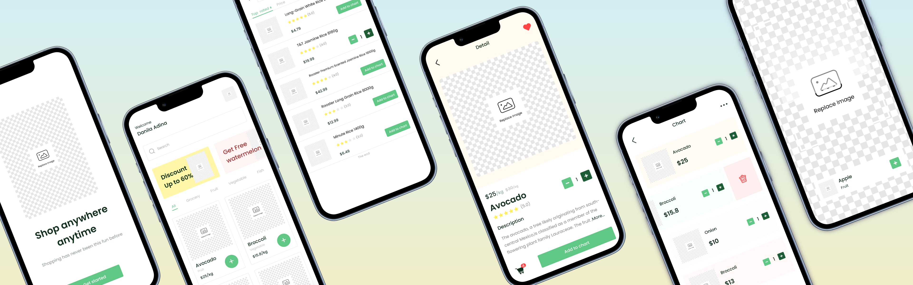

<div id="portfolio-page" class="portfolio-page-content">
    <div class="portfolio-page-wrapper">
        <div class="portfolio-page-nav">
            <div class="nav-item portfolio-page-prev-next">
                <a class="ajax-page-load" href="portfolio-project-8.html"><i class="lnr lnr-chevron-left"></i></a>
                <a class="ajax-page-load" href="portfolio-project-2.html"><i class="lnr lnr-chevron-right"></i></a>
            </div>
            <div class="nav-item portfolio-page-close-button">
                <a id="portfolio-page-close-button" href="#"><i class="lnr lnr-cross"></i></a>
            </div>
        </div>

        <div class="portfolio-page-title">
            <div>
                <h1>TechCube</h1>
                <h5>Online Learning Content Management System</h5>
            </div>
        </div>
        <div class="hero">
            
        </div>

        <div class="project-overview olcms">
            <div class="project-overview-row">
                <h2>Project Overview</h2>
            </div>
            <div class="project-overview-row">
                <div>
                    <h3>Challenge</h3>
                    <p>Our company's immersive data analysis and software development training faced disruption due to the pandemic. As courses rapidly shifted from offline to online, we aimed to develop an all-in-one online learning system to meet students' needs.</p>
                </div>
                <div>
                    <h3>Objective</h3>
                    <p>Operating in an agile framework, we iterated features, valuing user input. Our core objective: design a user-focused online platform that ignites motivation. Our initial phase included vital elements like student course interfaces, teacher management tools, and admin controls.</p>
                </div>
                <div>
                    <h3>My Role</h3>
                    <p style="margin-bottom: 0;">
                        Within a trio of designers, I led student UI design. Collaboratively, we mapped features and UI requirements. Individually, I handled:
                    </p>
                    <ul>
                        <li><strong>PRD and Screen Identification: </strong>Defining requirements and key screens for a clear roadmap.</li>
                        <li><strong>User Flow, Architecture, Wireframes: </strong>Crafting intuitive user flows, information structure, and wireframes.</li>
                        <li><strong>UI Kit and High-Fidelity Design: </strong>Creating a consistent UI kit and detailed designs for a polished interface.</li>
                    </ul>
                    <p>
                        Together, we reshaped online education through purposeful design.
                    </p>
                </div>
            </div>
        </div>

        <div class="design-process">
            <div class="design-process-row">
                <h2>Design Process</h2>
            </div>
            <div class="design-process-row">
                <div>
                    <h3>Feature Roadmap</h3>
                    <p>Collaborating with researchers, we synergize user needs and business objectives into our <a href="https://drive.google.com/file/d/1VytI4dv5cEHxi4CbsO27nPB-AxVaLmUB/view?usp=sharing" id="feature-roadmap">Feature Roadmap</a>. This touchpoint crystallizes project goals, ensuring alignment. Our comprehensive roadmap embraces Must-have (P1), Nice-to-Have (P2), Surprising and Delightful (P3), and Can-come-later (P4) features, grounded in business and user demands.
                    </p>
                </div>
                <div>
                    <h3>Task Flow</h3>
                    <p>The video player page is at the core of our platform, especially for lectures. It handles key actions like note-taking, Q&A, announcements, and interactions. Task flows are key here. They help me narrow my focus by breaking down each function. These flows outline the steps, showing the finer points of user experience. Five task flows match established tasks, making things clear and easy to grasp.</p>
                    
                </div>
                <div>
                    <h3>User Flow</h3>
                    <p>Guiding users from platform entry to lecture immersion, the design journey maps succinct user flows. This navigational framework ties pages coherently. From landing to lecture chapter (video player screen), this user-centric flow encapsulates holistic engagement.</p>
                    
                </div>
                <div>
                    <h3>UI Requirements and Wireframes</h3>
                    <p>Collaboratively, we drafted a <a href="https://drive.google.com/file/d/1ssYioYVGZA3GDuRh6tAY5FnFe9FgWrWa/view?usp=sharing" id="ui-requirement">UI Requirements document</a>, outlining the key screens from both task and user flows. Skipping the sketching phase, I directly translated concepts into mid-fidelity wireframes. This accelerated my process, moving ideas from imagination to tangible structure. Ensuring consistency across devices, we extended the wireframes to be responsive for desktop, tablet, and mobile interfaces.</p>
                    
                    <p>The researchers played a vital role in conducting usability tests, which provided valuable insights. We then prioritized and incorporated their recommendations into the wireframes, refining our design iteratively.</p>
                </div>
                <div>
                    <h3>Branding & UI Kit</h3>
                    <h4>Logo and Styles</h4>
                    <p>
                        Our logo and brand name, TechCube, have been meticulously designed to resonate with our online learning platform. The creative alignment of this logo with our established brand attributes effectively reflects our brand's value.
                        <br>
                        We further developed the visual style of TechCube, including the color palette, typography that guides UI design later.
                    </p>
                    <h4>UI Kit</h4>
                    <p>With our style guide established, we initiated the creation of our UI Kit. This essential resource provides a reference for future designs and fosters collaboration within our design team. It is also a living document and will be updated whenever there is an iteration of the design. </p>
                    <p>Below is our style tile and a part of the UI Kit, and the full version can be accessed <a
                            href="https://drive.google.com/file/d/1JyUXtayk62buk47ALQT-Z_qrucTdGJS3/view?usp=sharing" id="here">here</a>.</p>
                    
                </div>
                <div>
                    <h3>Responsive UI Design</h3>
                    <p>Applying our established styles, I crafted responsive user interfaces. This approach not only ensures consistency but also allows for a comprehensive assessment of the website's overall aesthetics and visual harmony.</p>
                    
                    
                    
                </div>
                <div>
                    <h3>Final Prototype</h3>
                    <p>With all the high-fidelity pages designed, I built up the final prototype for student interfaces.</p>
                    <div>
                        <h4>Log in to access my learning courses</h4>
                        <div class="olcms_display_video">
                            <video autoplay muted loop>
                                <source src="img/portfolio/olcms/my_learning_prototype.mp4" type="video/mp4">
                            </video>
                        </div>
                    </div>
                    <div>
                        <h4>Lecture learning (video player)</h4>
                        <div class="olcms_display_video">
                            <video autoplay muted loop>
                                <source src="img/portfolio/olcms/video_player.mp4" type="video/mp4">
                            </video>
                        </div>
                    </div>
                    <div>
                        <h4>Access free courses</h4>
                        <div class="olcms_display_video">
                            <video autoplay muted loop>
                                <source src="img/portfolio/olcms/free_course.mp4" type="video/mp4">
                            </video>
                        </div>
                    </div>
                </div>
            </div>
            <!--            <div class="design-process-full-width">-->
            <!--                <div class="high-fi-wireframe">-->
            <!--                    -->
            <!--                </div>-->
            <!--            </div>-->
        </div>

        <div class="next-step olcms">
            <div class="next-step-row">
                <h2>Next step</h2>
                <h4>Iterative Design</h4>
                <p>Our next phase involves rigorous usability testing. Armed with user feedback from the testing, we'll iteratively refine our designs. This includes making necessary adjustments, enhancing user flows, and addressing any usability issues identified during testing.</p>
                <h4>Comprehensive System</h4>
                <p>To make our system truly comprehensive, we'll expand our design efforts to cover additional pages and functionalities. This will ensure that the user experience remains seamless and cohesive across the entire platform.</p>
                <h4>Development Integration</h4>
                <p>Development Integration: Collaborating closely with the development team, we'll facilitate the integration of our designs into the development process, ensuring a smooth transition from prototypes to a functional platform.</p>
            </div>
        </div>


        <!--            <div class="col-sm-4 col-md-4 portfolio-block">-->
        <!--                &lt;!&ndash; Project Description &ndash;&gt;-->
        <!--                <div class="project-description">-->
        <!--                    <div class="block-title">-->
        <!--                        <h3>Description</h3>-->
        <!--                    </div>-->
        <!--                    <ul class="project-general-info">-->
        <!--                        <li><p><i class="lnr lnr-user"></i> Alex Smith</p></li>-->
        <!--                        <li><p><i class="lnr lnr-link"></i> <a href="#" target="_blank">www.project-site.com</a></p></li>-->
        <!--                        <li><p><i class="lnr lnr-calendar-full"></i> 25 april, 2021</p></li>-->
        <!--                    </ul>-->

        <!--                    <p class="text-justify">Aliquam euismod aliquam massa, quis eleifend dui sodales vitae. Interdum et malesuada fames ac ante ipsum primis in faucibus.</p>-->
        <!--                    &lt;!&ndash; /Project Description &ndash;&gt;-->

        <!--                    &lt;!&ndash; Technology &ndash;&gt;-->
        <!--                    <div class="tags-block">-->
        <!--                        <div class="block-title">-->
        <!--                            <h3>Technology</h3>-->
        <!--                        </div>-->
        <!--                        <ul class="tags">-->
        <!--                            <li><a>HTML5</a></li>-->
        <!--                            <li><a>CSS3</a></li>-->
        <!--                            <li><a>jQuery</a></li>-->
        <!--                            <li><a>Ajax</a></li>-->
        <!--                            <li><a>PHP5</a></li>-->
        <!--                        </ul>-->
        <!--                    </div>-->
        <!--                    &lt;!&ndash; /Technology &ndash;&gt;-->

        <!--                    &lt;!&ndash; Share Buttons &ndash;&gt;-->
        <!--                    <div class="share-buttons">-->
        <!--                        <div class="block-title">-->
        <!--                            <h3>Share</h3>-->
        <!--                        </div>-->
        <!--                        <div class="share-buttons-block">-->
        <!--                            <a href="#" target="_blank" class="btn"><i class="fab fa-facebook-f"></i> </a>-->
        <!--                            <a href="#" target="_blank" class="btn"><i class="fab fa-twitter"></i> </a>-->
        <!--                            <a href="#" target="_blank" class="btn"><i class="fab fa-dribbble"></i> </a>-->
        <!--                        </div>-->
        <!--                    </div>-->
        <!--                    &lt;!&ndash; /Share Buttons &ndash;&gt;-->
        <!--                </div>-->
        <!--                &lt;!&ndash; Project Description &ndash;&gt;-->
        <!--            </div>-->

        <div class="project-page-footer">
            <p>© 2023 Yumao Chen</p>
        </div>
    </div>
</div>


